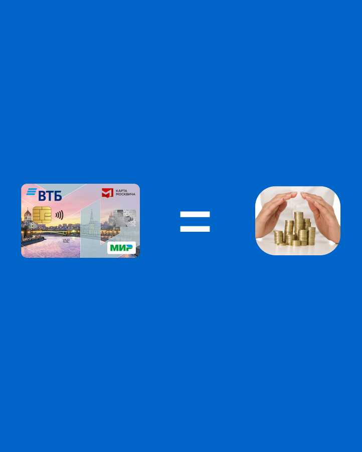
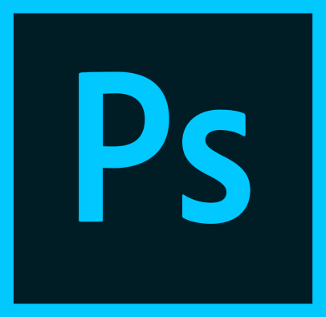
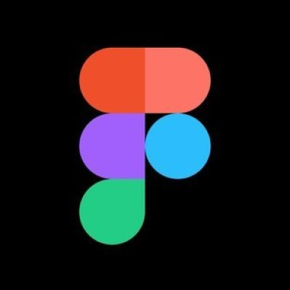

На протяжении одного месяца я являюсь студентом Школы Дизайна, в связи с чем уже могу дать какие то советы ребятам, которые только-только начинают. Предлагаю Вам ознакомиться с советами и программами, в которых Вам предстоит работать.
На начальном этапе обучения очень важно вникнуть в процесс обучения и прочувствовать все важные моменты. Поэтому Вам нужно посещать абсолютно все занятия.
Из-за нового и непривычного Вам графика, вам будет довольно тяжело контролировать Ваше свободное время. Поэтому может получится так, что у Вас скопилось огромное количество домашки, которое нужно будет сделать в один день. Для того, чтобы этого избежать, достаточно просто делать значительную часть заданий заранее.
Это очень важно. Так Вы сможете легко и просто выяснить у других интересующую Вас информацию или разъяснить какой-либо непонятный момент.
Тут всё просто. Сон является залогом Вашей продуктивной работы.
Эта полезная штука поможет Вам сэкономить много денег на общественном транспорте. Особенно актуально для иногородних и иностранных студентов.
Векторный графический редактор, разработанный и распространяемый фирмой Adobe Systems.Используется, в основном, для работы с визуальной частью проектов.
Многофункциональный графический редактор, разработанный и распространяемый фирмой Adobe Systems. В основном работает с растровыми изображениями, однако имеет некоторые векторные инструменты. В работе используется не так часто, как иллюстратор, чаще всего в нём идёт оформление мокапов.
Программа компьютерной вёрстки, разработанная фирмой Adobe Systems. В ней мы собираем презентации проектов.
Онлайн-сервис для разработки интерфейсов и прототипирования с возможностью организации совместной работы в режиме реального времени. В каком-то смысле это аналог иллюстратора, но в нём, на мой взгляд, больше интересных функций и более удобный интерфейс (кстати, визуальная часть этого гайда создавалась именно в фигме)
Крупнейший веб-сервис для хостинга IT-проектов и их совместной разработки. Проще говоря, здесь хранится и передаётся код, который мы будем делать в процессе обучения
Это программа, где мы, собственно, будем делать сам код.
По итогу хочется отметить, что ничего страшного в том, что Вам неизвестна та или иная программа, нет, ведь работе с каждой из них Вас будут обучать. Однако их знание значительно облегчит Вашу учёбу, потому что при создании проектов у Вас отпадёт такая проблема, как незнание какой-либо программы.